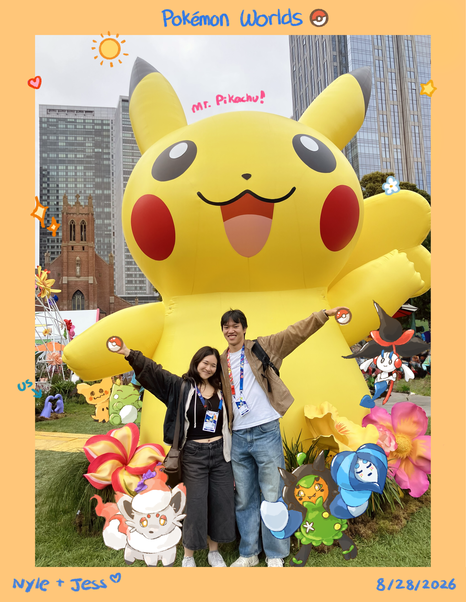

Sunny Bay
07 / 09hi Nyle :) happy one month (°◡°♡) it feels like time has passed by super fast but also super slow at the same time? since we are not together in person I still wanted to commemorate, and I was debating between sending you something but thought that this would be cute c: our first solo adventure together! with more to come hopefully!
despite the utter destruction of our sleep schedules, it has been super fun and nice hanging out/yapping with you <3 thank you for being there for me and always listening/trying to understand. I'm still really sorry about making you feel confused/uncertain at the start (and kicking you out.....) but I hope that you have also had a good time this past month and will one day forgive me 🥺
I'm always really excited every day to talk to you :> it feels so strange (and maybe a little scary?) that one person has so much of an impact on me, but I'm glad that it's you <3 you make me feel really happy and special, and I hope that I can do the same for you as well! I think you're super kind and sweet and fun to be around, and I appreciate how you're always trying to look out for me/encourage me to do better :) and super cool and confident! I feel so comfortable/safe around you despite not having known you for super long, and I'm excited to continue growing/booling/experiencing new things together :3
excited to see you soon :0
<3 Jess